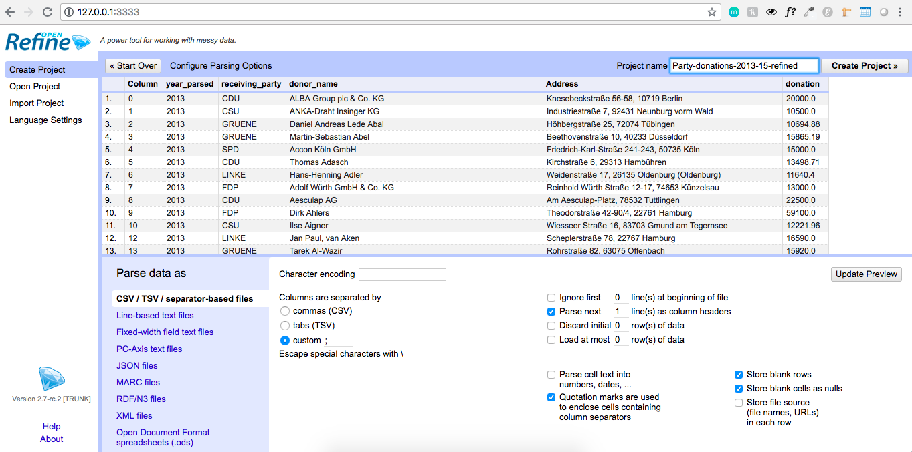
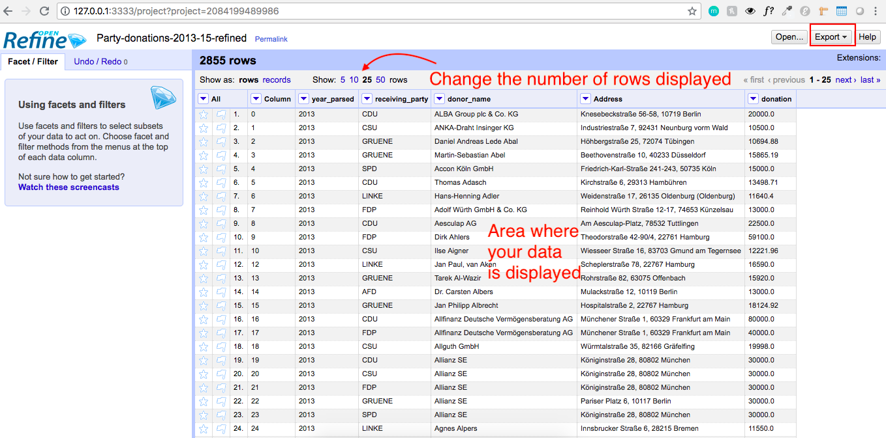
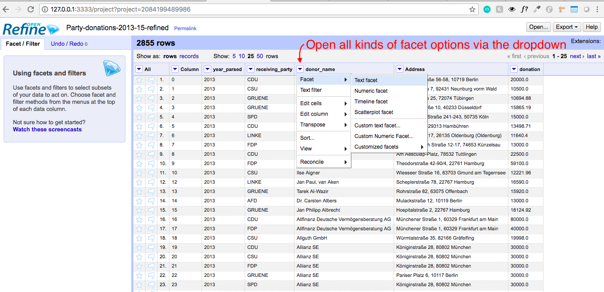
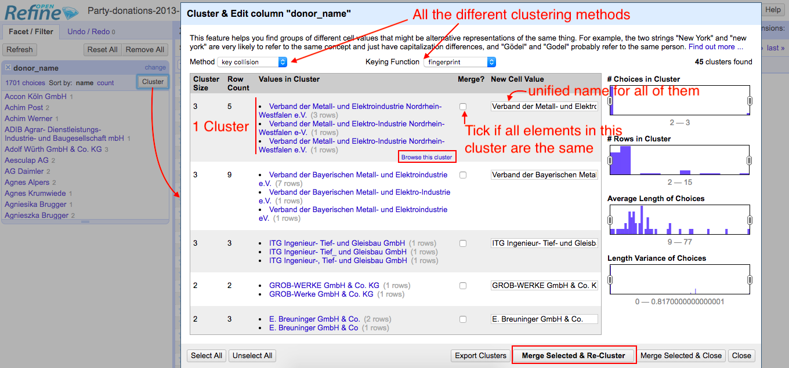

Usage: Open Refine is a tool to unify messy text data based on similarity: For example, it's capable of recognizing that Google, GOogle and Googl might be the same thing and can fix - without you having to do a lot of "find and replace" or check every entry in your dataset manually.
Wait, but why would you want to do that? If you move on with analysing your dataset and you use features like Pivot tables to sum all values of a certain kind, they will only be recognized as the same kind if they are spelled the exact same way.
If you haven't installed Open Refine yet, head to their download page, where you can also find more information about the program itself.
If you've installed the software and want to open it and it doesn't work (as in: your standard browser should open up a new tab/window and the following Open Refine user interface appears), you can - after starting the program - head to your browser and type http://127.0.0.1:3333/ in the url line. When successful you should see something like this:
In this tutorial we'll work with this example file, it is a .csv file, but as you can see, you can also work with various other file types. In the example file each entry is any donation above 3000 euros from an individual or company to a German political party between 2013 and 2015. It lists the donor, the donor's address, the receiving party and the sum donated per year.
When you have created your project it should look something like this:
For cleaning the data, you have to do that for each column separately, so you'd click on the dropdown icon on the column you want to clean and select "text facet"
In your left column, that facet will appear with a "cluster" button on the top right corner of it. If you click on it, a new window opens up. On the top you have a combinatio of two dropdown menus that allows you to select different clustering methods.
For each of the methods Open Refine shows you what entries it thinks are the same and asks you to merge these into one by ticking the box under "Merge?", you can also define what the unified name should be.
In case you are unsure about whether two entries are the same, there's also a "Browse this cluser" button at the end of each cluster. Once you selected all of the clusters to merge, hit the "Merge and re-cluster" button.
Repeat this process for all cluster methods until there's nothing else left you want to cluster, then you close the cluster window and export your file in the desired format via the button is the top right corner.
If you are looking for a commandline-based tool, I recommend checking out Max Harlow's fuzzy matching.